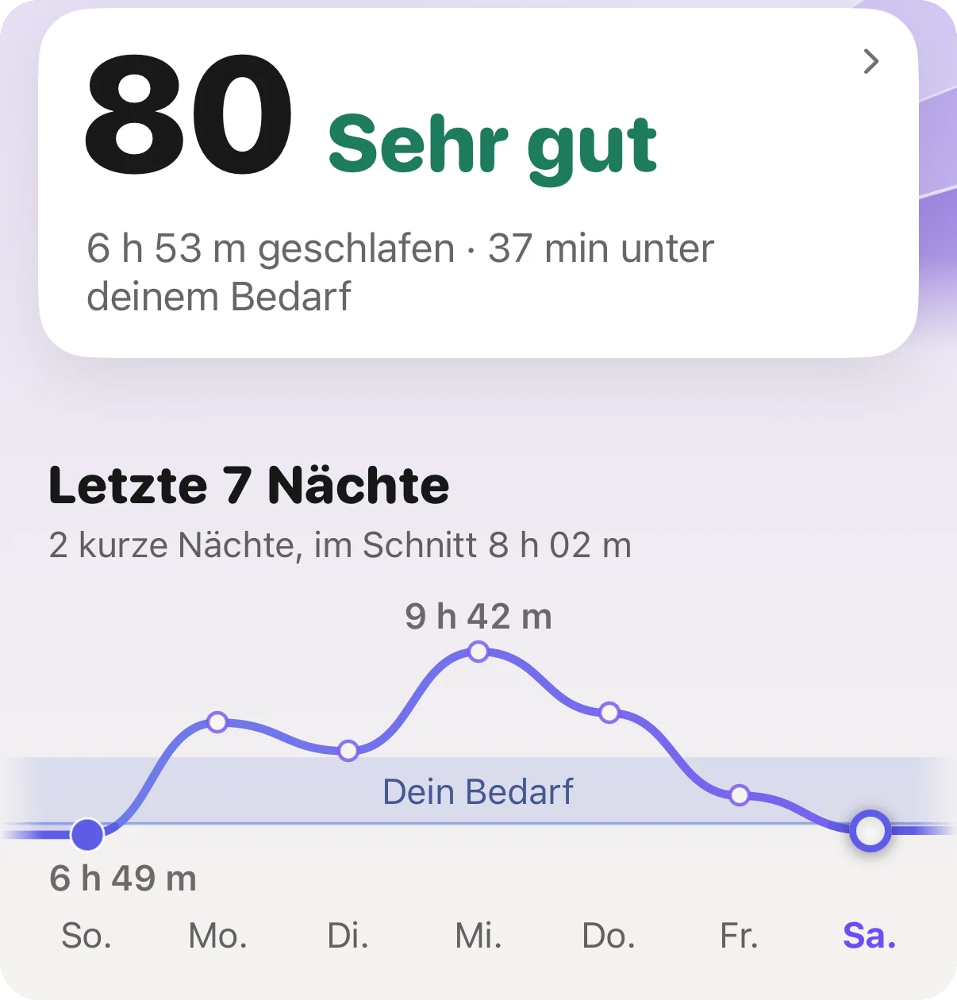
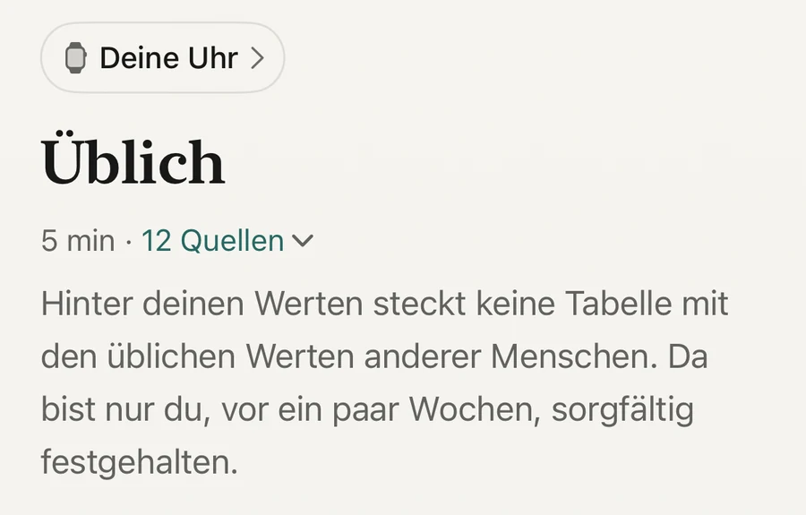

Grundlagen · Schlaf

Die erste Veränderung zeigt sich in der ersten Nacht: ein niedrigerer Puls im Schlaf und eine höhere HRV. Die Wirkung von Alkohol auf die Nacht gehört zu der Nacht, in der du getrunken hast, und verschwindet deshalb mit dem Getränk. Langsameres braucht den Monat. In einer Studie mit Menschen, die einen Monat lang aufhörten, sanken Blutdruck und Gewicht. Eine Uhr kann die erste Art von Veränderung zeigen. Deine Leber sieht sie nicht.
Es hält deinen Körper im Schlaf in einem wacheren Zustand. In einer finnischen Studie trugen 4.098 Berufstätige in Nächten mit und ohne Alkohol ein Herzmessgerät, und jede Person wurde mit ihren eigenen Nächten ohne Alkohol verglichen. Mit Alkohol war der Puls in den ersten Stunden des Schlafs höher und die Herzfrequenzvariabilität, die HRV, niedriger. Der Anteil der ersten drei Stunden, den der Körper in einem Erholungszustand verbrachte, sank nach einer kleinen Menge um 9 Prozentpunkte, nach einer mittleren um 24 und nach einer großen um 39 (Pietilä und Kollegen, 2018).
Wie viel Erholung in der frühen Nacht verloren ging
Fitness oder ein junges Alter schützten nicht davor. Die Wirkung zeigte sich bei beiden Geschlechtern und auf jedem Aktivitätsniveau.
Auch der nächste Tag bekommt etwas ab. Eine Cochrane-Übersicht über 32 Studien ergab, dass eine größere Menge Alkohol den Puls bis zu 24 Stunden erhöht hält (Tasnim und Kollegen, 2020). Deshalb kann dein Ruhepuls am Tag danach höher liegen.
Weil Alkohol in einer Nacht zwei gegensätzliche Dinge tut. Eine Übersicht der Studien aus dem Schlaflabor ergab, dass er das Einschlafen verkürzt und die erste Nachthälfte vertieft, die zweite Hälfte aber stört. In mittleren und großen Mengen verzögert und verringert er außerdem den REM-Schlaf (Ebrahim und Kollegen, 2013).
Auf der Uhr siehst du vor allem die zweite Hälfte: mehr Wachzeit gegen Morgen und einen Puls, der oben bleibt. Lies nicht zu viel in die Minuten der einzelnen Schlafphasen hinein. Eine Uhr schätzt die Phasen aus Bewegung und Puls, und die Schätzung ist gröber, als das Diagramm aussieht.
Die Werte der Nacht, und zwar sofort. Die Wirkung gehört zu der Nacht, in der du getrunken hast. Eine Nacht ohne Alkohol sieht deshalb so aus, wie deine Nächte ohne Alkohol immer aussahen: niedrigerer Puls im Schlaf, höhere HRV und eine ruhigere zweite Hälfte.
Wie viel du davon siehst, hängt davon ab, wo du startest. Wenn du an den meisten Abenden etwas getrunken hast, hat deine Uhr dein Übliches aus diesen Nächten gelernt. In der ersten Woche liegen deine Werte dann besser als üblich, und in den folgenden zwei bis vier Wochen zieht das Übliche nach. Wenn du selten getrunken hast, gibt es wenig zu sehen, und auch das ist ein echtes Ergebnis.
Eine Uhr kann die Nacht zeigen. Deine Leber sieht sie nicht.
Behalte eines im Kopf. Eine Erkältung, hartes Training, ein spätes schweres Essen, ein heißes Schlafzimmer oder eine stressige Woche bewegen dieselben Werte. Eine gute Nacht beweist nichts. Eine gute Woche fängt an, etwas zu bedeuten.
Das Langsamere. In einer Londoner Studie hörten 94 mäßige bis starke Trinker einen Monat lang auf, 47 andere tranken weiter. Bei denen, die aufhörten, sanken der systolische und der diastolische Blutdruck um jeweils etwa 6 %, das Gewicht um 1,5 % und ein Maß für die Insulinresistenz um etwa ein Viertel. In der Gruppe, die weitertrank, änderte sich nichts. Die Studie war nicht randomisiert. Sie zeigt also, was passiert ist, und beweist nicht die Ursache (Mehta und Kollegen, 2018).
Auch hier kommt es darauf an, wie viel du getrunken hast. Über viele Studien hinweg senkte weniger Alkohol den Blutdruck bei Menschen, die mehr als zwei Gläser am Tag tranken, und je mehr sie wegließen, desto stärker sank er. Bei Menschen, die weniger tranken, änderte sich wenig (Roerecke und Kollegen, 2017).
Wie Menschen sich fühlen, lässt sich schwerer messen. In einer Umfrage der Universität Sussex unter Menschen, die den Dry January durchgehalten hatten, sagten etwa sieben von zehn, dass sie besser schlafen. Sie hatten sich selbst zur Teilnahme entschieden und berichteten selbst, lies das also als Erfahrung und nicht als Messung (University of Sussex, 2019; de Visser und Piper, 2020).
Wenn du jeden Tag viel trinkst, hör nicht von heute auf morgen allein auf. Ein Entzug kann gefährlich sein, sprich deshalb vorher mit einem Arzt.

Dein Übliches, nicht das eines DurchschnittsmenschenAera liest jeden Wert im Vergleich zu deinen eigenen letzten Wochen. Dadurch wird ein Monat Veränderung sichtbar, und deshalb liegen die ersten Wochen einer neuen Gewohnheit besser als üblich.
Aera, für iPhone und Apple Watch
Aera liest deinen Schlaf, deinen Puls im Schlaf, deine HRV und deinen Ruhepuls im Vergleich zu deinem eigenen Üblichen, dem Bereich, den deine letzten Wochen vorgeben. Liegt eine Nacht außerhalb, sagt der Bildschirm das in einfachen Worten. Solange zu wenig Daten da sind, steht dort, dass Aera noch lernt.
Aera hat keinen Getränkezähler und weiß nicht, ob du getrunken hast. Es zeigt, was dein Körper getan hat. Die Notizen in der App erklären, was jeden Wert bewegt, auch Alkohol, und nennen die Studie dahinter. Wenn du Blutdruck misst, kannst du eine Messung mit Alkohol letzte Nacht markieren.
Die letzten 30 Tage jedes Werts sind kostenlos, also ein trockener Monat von der ersten Nacht bis zur letzten. Es gibt kein Konto.
Aera ist kein Medizinprodukt. Es kann dir nicht sagen, wie viel Alkohol für dich unbedenklich ist.
Ja. In einer Studie mit 4.098 Erwachsenen war der Puls in den ersten Stunden des Schlafs in Nächten mit Alkohol höher und die HRV niedriger als in den Nächten derselben Person ohne Alkohol. Je mehr getrunken wurde, desto größer war die Veränderung.
Die Wirkung auf die Nacht gehört zu der Nacht, in der getrunken wurde, schon die erste Nacht ohne Alkohol sieht also anders aus. Langsamere Veränderungen wie Blutdruck und Gewicht brauchten in der Studie, die sie gemessen hat, etwa einen Monat.
Sie kann die Nächte zeigen: niedrigerer Puls im Schlaf, höhere HRV und weniger Wachzeit in der zweiten Nachthälfte. Deine Leber und dein Risiko auf lange Sicht sieht sie nicht. Vergleiche Wochendurchschnitte mit den Wochen davor, nicht einzelne Nächte.
In der finnischen Studie verringerte schon eine kleine Menge, bei 75 kg bis etwa ein halber Liter Bier, die Erholung des Körpers in den ersten drei Stunden Schlaf um 9 Prozentpunkte. Größere Mengen verringerten sie um 24 und 39.
Verwandte Notizen (auf Englisch): was der Puls im Schlaf ist · Schlafphasen der Uhr sind eine Schätzung
Verwandte Ratgeber: Was ist ein guter Schlafscore? · Was ist ein normaler HRV-Wert der Apple Watch? · Welcher Ruhepuls ist normal?